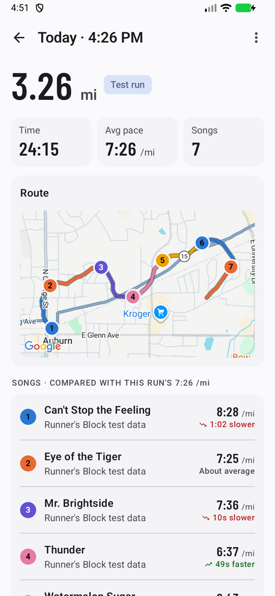
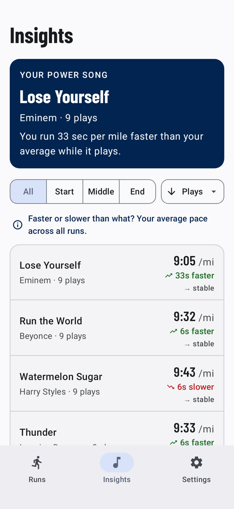
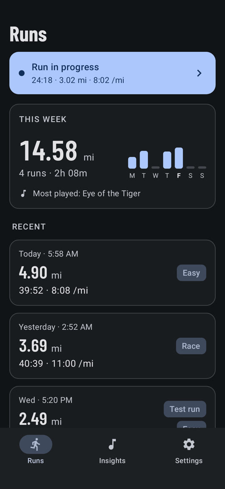

Android app · Kotlin · Jetpack Compose
Find the songs that make you run faster.
Runner's Block records your run with GPS, notices what's playing in whatever music app you use, and works out your pace during every song. Then it ranks your music by how much faster (or slower) it makes you.



Sample data. The route is a generated test run through downtown Auburn, AL; the other two screens are rendered by the app's UI tests.
How it works
No special music app needed, and nothing to set up beyond two permissions.
Record with GPS
Start a run and go. A foreground service tracks your route and pace, and tells walking breaks apart from running.
Play anything
Spotify, YouTube Music, Pandora, podcasts. The app reads the "now playing" info from the media controls, so it works with any player.
Pace per song
Each stretch of the route is matched to the song that was playing, and compared with your average for that part of the run.
Your power songs
Songs are ranked by how much faster they make you, split by the start, middle and end of a run, with optional fatigue and recency weighting.
How it's built
A single-activity Jetpack Compose app, split into layers that each do one job.
Compose screens
Material 3 and Navigation 3. Each screen draws one immutable state and sends user actions up.
Screen logic
Hold each screen's state as a StateFlow, handle its actions, and own the navigation back stack.
Plain Kotlin
Pace math, song matching and run-or-walk detection, with no Android dependencies.
Room, DataStore, services
Runs in Room, settings in DataStore, GPS in a foreground service, music from a notification listener.
Dagger 2 wires it together, with a separate graph for the tracking service. Coroutines and Flow carry data between layers.
- Kotlin
- Jetpack Compose
- Material 3
- Navigation 3
- Coroutines & Flow
- Dagger 2
- Room
- DataStore
- Google Maps SDK
- Robolectric